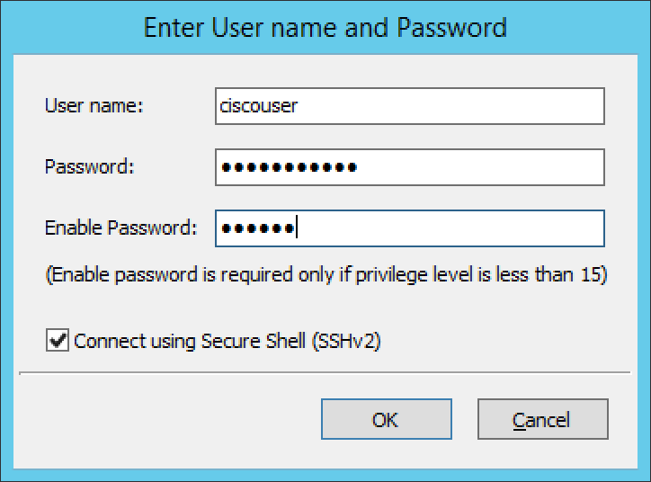

Cisco DHCP (Management Console, deprecated)
Adding a Cisco DHCP server
When adding a Cisco DHCP server, the following dialog box displays:
{kind=link}
Type the User name and Password that should be used to access the server. This is the user name and password that is used when normally accessing the Cisco device from the command line prompt. If the server requires a separate password to enter privilege level 15, enter the required password in the Enable Password field. If you select the Connect using Secure Shell (SSHv2) checkbox, a secure connection will be used to access the server. If this checkbox is unchecked, the server will be accessed through a telnet connection.
Cisco Server Properties
- Hostname
Specifies the name of the Cisco router. Refer to Cisco IOS IP Addressing Command Reference document for more information.
- Domain Name
Specifies the default domain name that the Cisco IOS software uses to complete unqualified host names. Refer to Cisco IOS IP Addressing Command Reference document for more information.
- Name Server
Specifies the address of a name server to use for name and address resolution. Refer to Cisco IOS IP Addressing Command Reference document for more information.
Set User Name and Password
This menu item is only displayed when a user with DHCP administration privileges is logged in. This command updates the user name and password that should be used to access the Cisco DHCP server. Use this command if the user name or password on the Cisco DHCP server has changed.